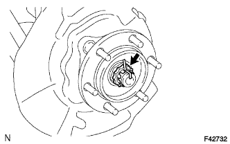
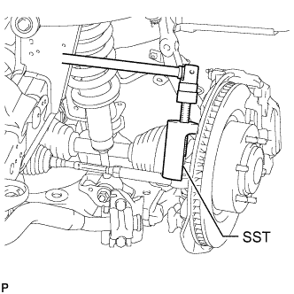
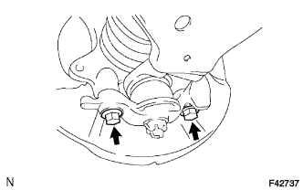
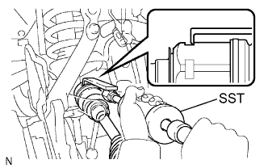

FRONT DRIVE SHAFT ASSEMBLY > REMOVAL |
| 1. REMOVE FRONT WHEEL |
| 2. DRAIN DIFFERENTIAL OIL |
Stop the vehicle on a level surface.
Remove the differential drain plug and gasket.
Drain the oil.
Install a new gasket and the differential drain plug.
| 3. REMOVE FRONT AXLE HUB GREASE CAP |
Using a screwdriver and hammer, remove the front axle hub grease cap.
| 4. REMOVE FRONT AXLE SHAFT NUT |
|  |
Remove the cotter pin and lock cap.
Remove the front axle shaft nut.
| 5. REMOVE FRONT SPEED SENSOR |
Remove the bolt and speed sensor from the knuckle.
| 6. DISCONNECT TIE ROD END SUB-ASSEMBLY LH |
|  |
Using SST, disconnect the tie rod end assembly.
| 7. DISCONNECT FRONT LOWER BALL JOINT ATTACHMENT LH |
|  |
Remove the 2 bolts and disconnect the lower ball joint attachment from the steering knuckle.
| 8. REMOVE FRONT DRIVE SHAFT ASSEMBLY LH |
|  |
Using SST, remove the front drive shaft.